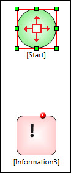

No
Linking Activities by Clicking and Linking
Two activities can be linked by clicking on one and dragging and dropping the connector on the other.
To link two activities in this way:
- Click on the icon of the first activity to be linked.
This will display a red box with arrows radiating on all sides as shown. As you move the mouse cursor away from the activity icon you will find a connector line following the mouse movement.

Origin of the link selected
- Now, place the cursor over the icon of the second activity to be linked and click the mouse button. This will attach the connector line starting from the first activity to the second activity completing the link between them.
Terminus of the link selected - You can click the connector line to configure the link.
Link completed